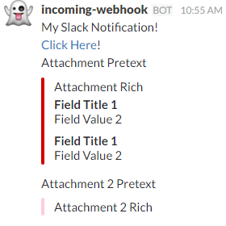

Sending Notifications to a Slack Webhook
In this article you will learn how to create a Slack webhook integration and send a notification to it. This article assumes that you already have a Slack team setup.
Adding a Webhook Integration to a Channel
Follow the instructions for setting up an incoming webhook integration. When finished, you should have a Webhook URL that looks like "https://hooks.slack.com/services/some/random/text".
Sending a Notification to the Webhook
1: 2: 3: 4: 5: 6: 7: 8: 9: 10: 11: 12: 13: 14: 15: 16: 17: 18: 19: 20: 21: 22: 23: 24: 25: 26: 27: 28: 29: 30: |
|
The result should look something like this:

For additional information on the parameters, check out Slack's Webhook Documentation
val webhookUrl : string
Full name: slacknotification.webhookUrl
Full name: slacknotification.webhookUrl
val printfn : format:Printf.TextWriterFormat<'T> -> 'T
Full name: Microsoft.FSharp.Core.ExtraTopLevelOperators.printfn
Full name: Microsoft.FSharp.Core.ExtraTopLevelOperators.printfn